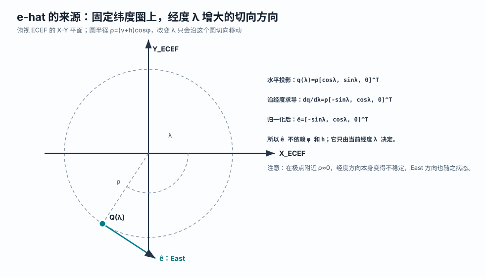
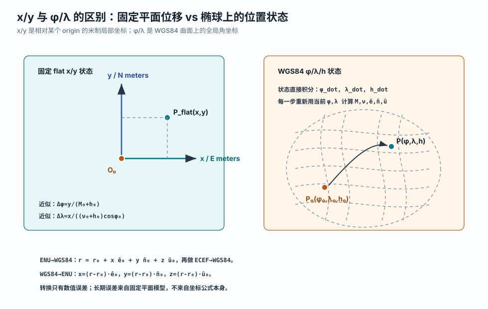
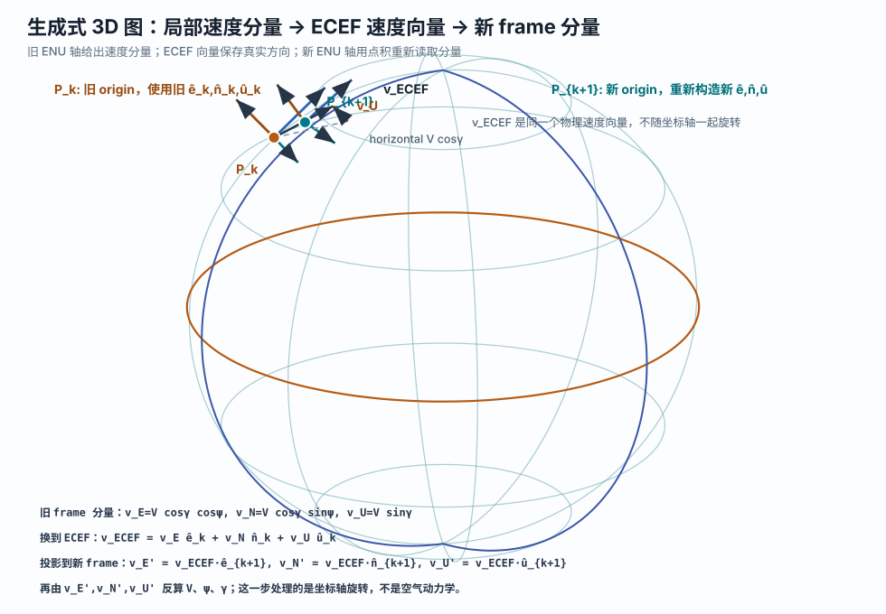

DIS / ECEF
PDF 中的 DIS 是 Distributed Interactive Simulation 标准里的地心地固直角坐标。它的几何含义与常见 ECEF 一致：原点在地心，Z 轴指向北极，X 轴穿过赤道和本初子午线，Y 轴在赤道面内构成右手系。
本文把 FAA Aircraft Dynamics Model 第 2.8 节的思路，翻译成适合当前
aerodynamic_model/simulator.py 的实现路径：飞机动力学仍在局部平直 \(x/y/z\) 坐标里计算，每一步把局部增量转换回 WGS84 大地坐标和 ECEF 地心地固坐标，再用新的 WGS84 位置进入下一步。
固定 ENU 的优点是简单，但飞机离原点越远，切平面越不贴合 WGS84 椭球。完整 ECEF 向量动力学可以处理全球运动、地球自转和非惯性项，但会迫使你重写力、姿态和重力模型。
FAA ADM 第 2.8 节采用的是中间路线：飞机方程仍然在局部 surface frame 中解释，位置传播时再把局部运动转换回 WGS84/ECEF。实现上有两条等价到一阶的路：一条是把局部速度换成 \(\dot\phi,\dot\lambda,\dot h\)，另一条是本文主体采用的“局部 \(x/y/z\) 增量 → ECEF → WGS84”。后者更贴近你现在的 simulator。

PDF 中的 DIS 是 Distributed Interactive Simulation 标准里的地心地固直角坐标。它的几何含义与常见 ECEF 一致：原点在地心，Z 轴指向北极，X 轴穿过赤道和本初子午线，Y 轴在赤道面内构成右手系。
大地坐标使用 \(\phi,\lambda,h\)：\(\phi\) 是 geodetic latitude，即大地纬度；\(\lambda\) 是 longitude，即经度；\(h\) 是 ellipsoidal height，即相对 WGS84 参考椭球的椭球高。
PDF 用 NED：\(x_s\) 指北，\(y_s\) 指东，\(z_s\) 指下。它随飞机当前位置移动，局部水平面与 WGS84 椭球在当前点的切平面平行。

令 \(a\) 表示 WGS84 semi-major axis，即赤道半径；\(e^2\) 表示第一偏心率平方；\(\nu\) 表示 prime vertical radius of curvature，即卯酉圈曲率半径。对于当前飞机位置 \(P(\phi,\lambda,h)\)：
FAA PDF 中的 \(D_\mu\) 与这里的 \(\nu\) 是同一类量：它不是地心半径，而是从椭球几何推出来、用于东西向传播的曲率相关因子。
用 \(\phi,\lambda\) 可以直接得到三根单位向量。下面采用 ENU 排列，方便和当前 `simulator.py` 对齐：
这里的帽子符号 \(\hat{\ }\) 表示 unit vector，即单位向量，长度为 1。 \(\hat{\mathbf e}\) 是 East 方向，\(\hat{\mathbf n}\) 是 North 方向，\(\hat{\mathbf u}\) 是 Up 方向。它们不是位置坐标，而是“当前位置的三根方向尺”。

具体推导如下。把 ECEF 位置向量只看水平投影，也就是只看 \(X,Y\) 分量：
当 \(\lambda\) 增加一个很小的量 \(d\lambda\) 时，点沿这个水平圆移动。对 \(\lambda\) 求导，得到切向量：
这个向量长度是 \(\rho\)。把它除以长度 \(\rho\)，就得到 East 单位向量。换句话说，e-hat（East unit vector，东向单位向量）的取值不是凭约定随便指定的，而是由“固定纬度圈的经度增大切线”归一化得到的：
FAA 的 NED 只是换一个排列和竖直方向：\(\hat{\mathbf x}_s=\hat{\mathbf n}\)，\(\hat{\mathbf y}_s=\hat{\mathbf e}\)，\(\hat{\mathbf z}_s=-\hat{\mathbf u}\)。
在当前位置附近，沿 North 走一小段，对应大地纬度变化；沿 East 走一小段，对应经度变化；沿 Up 走一小段，对应高度变化。曲率半径决定“多少米对应多少弧度”。

把小位移除以时间，就得到速度关系：
比较三根正交轴上的系数，可以得到直接积分经纬高时使用的变化率公式：
这就是 FAA 2.8 节公式 (2.114) 的 ENU 版本，也是本文最后备用方案的核心。PDF 中写成 NED 形式时，\(V_x\) 是 North 速度，\(V_y\) 是 East 速度，因此 \(\dot\mu=V_x/(R_\mu+h)\)，\(\dot\lambda=V_y/((D_\mu+h)\cos\mu)\)。对应到本文：\(\mu\to\phi\)，\(R_\mu\to M\)，\(D_\mu\to\nu\)。
`simulator.py` 里的 \(x,y,h\) 最适合解释成“某个局部 ENU 坐标系里的坐标”。如果每一步都用当前 WGS84 点作为这个局部坐标系的原点，那么局部状态可以写成：
这里 \(x\) 是 East 方向的局部米制位移，\(y\) 是 North 方向的局部米制位移，\(z\) 是 Up 方向的局部米制位移。为了避免和椭球高混淆，本文在局部积分里用 \(z\)，不用 \(h\) 表示这个竖直增量。
长期保存的位置不要是从最初原点累计出来的 \(x,y\)，而应该是当前 WGS84 点：
这并不等于放弃 \(x,y\)。真正的做法是：每一步把 \((\phi,\lambda,h)\) 作为局部 origin，令 \(x=y=z=0\)，用当前动力学积分出这一小步的 \(x,y,z\)，然后立刻转回新的 \(\phi,\lambda,h\)。
在第 \(k\) 步，当前 WGS84 位置是 \(P_k=(\phi_k,\lambda_k,h_k)\)。先把它正算成 ECEF 位置向量 \(\mathbf r_k\)，并由 \(\phi_k,\lambda_k\) 计算当前局部轴 \(\hat{\mathbf e}_k,\hat{\mathbf n}_k,\hat{\mathbf u}_k\)。局部积分器只负责从 \(x=y=z=0\) 积分出这一小步的局部位移：
然后对 \(\mathbf r_{k+1}\) 做 ECEF→WGS84 反算，得到 \(P_{k+1}=(\phi_{k+1},\lambda_{k+1},h_{k+1})\)。下一步再用 \(P_{k+1}\) 作为新的 origin，局部 \(x,y,z\) 再次从 0 开始。

\(\Delta\phi,\Delta\lambda\) 公式是上面精确路径在当前点的一阶近似。把局部位移直接换成经纬度增量时，会写成：
主方案不需要显式计算这两个近似增量，而是走 \(x/y/z\rightarrow\) ECEF \(\rightarrow\) WGS84。两者在步长足够小时几乎一致；差别是主方案把“这一小步的直角位移”放进 ECEF 后再反算，少了一层经纬度线性化。它仍然有时间步长误差和局部平面单步近似误差，但不会把 \(M,\nu,\cos\phi\) 固定在很久以前的原点。
| 步骤 | 误差性质 | 说明 |
|---|---|---|
| \(x/y/z\rightarrow\) ECEF \(\rightarrow\) WGS84 | 坐标转换本身几乎只有数值误差 | 只要 WGS84 参数一致，主要是浮点舍入和 ECEF 反算容差。 |
| 单步局部平面积分 | 有时间步长和局部线性化误差 | 这一小步把局部 frame 视为不旋转；步长越小，误差越小。下一步重建 origin 可以避免长期固定平面误差。 |
| \(\Delta\phi,\Delta\lambda\) 近似 | 额外增加一阶曲率近似误差 | 它直接用当前 \(M,\nu,\cos\phi\) 把米换成弧度，适合短步长或作为公式核对。 |
| 从最初 origin 长期累计 \(x,y\) | 会有明显模型误差 | 真实地球表面弯曲，局部 Up/North/East 随位置旋转；固定平面不能持续贴合曲面。 |
若沿用当前 \(\psi\) 约定，即 \(\psi=0\) 朝 East，\(\psi=\pi/2\) 朝 North，则局部速度分量仍然是：
速度大小、爬升角、航向角、质量和控制输入也可以继续使用当前模型：
这里 \(T\) 是 thrust，即推力；\(D\) 是 drag，即阻力；\(n\) 是 load factor，即载荷因子；\(\mu_b\) 是 bank angle，即倾侧角。为了避免和 PDF 中 geodetic latitude \(\mu\) 混淆，本文用 \(\mu_b\) 表示 bank angle。

每一步换 origin 后，新的 \(\hat{\mathbf e},\hat{\mathbf n},\hat{\mathbf u}\) 会轻微旋转。如果只更新位置，却把旧 frame 里的 \(\psi,\gamma\) 原样带到新 frame，短距离通常问题不大，但严格说会把速度方向留在旧坐标尺里。更稳妥的做法是先把速度写成 ECEF 向量，再投影到新 frame。

公式的来源分两步。第一步是把 speed、heading-like angle 和 climb angle 变成局部分量。\(V\) 是总速度大小；\(\gamma\) 是 climb angle，即速度向量相对局部水平面的爬升角。所以速度在水平面内的投影长度是：
当前文档沿用 `simulator.py` 的 \(\psi\) 约定：\(\psi=0\) 指 East，\(\psi=\pi/2\) 指 North。于是水平速度 \(V_h\) 在 East 和 North 两轴上的分量就是普通二维直角坐标投影：
第二步是换基。ENU 的三根轴 \(\hat{\mathbf e}_k,\hat{\mathbf n}_k,\hat{\mathbf u}_k\) 本身已经是写在 ECEF 坐标里的单位向量，并且互相垂直。在线性代数里，如果一组互相垂直的单位向量作为基底，那么“某个向量等于各轴分量乘以各轴方向再相加”：
把上一步的 \(v_E,v_N,v_U\) 代入，就得到文档中使用的速度向量公式：
这里的星号 \(^\ast\) 表示“局部积分刚结束、还没有投影到新 frame 的值”。它不是新的坐标系统，只是提醒读者这些量还属于旧的第 \(k\) 步局部 frame。
到了新位置 \(P_{k+1}\)，\(\hat{\mathbf e},\hat{\mathbf n},\hat{\mathbf u}\) 已经轻微改变。要在新 frame 中读取同一个物理速度向量，只需要对新基底做点积投影。点积的意义是“一个向量在某个单位方向上的长度”：
得到新 frame 下的三个速度分量后，再把它们还原成 `simulator.py` 使用的 \(V,\psi,\gamma\)。速度大小来自三维勾股定理：
\(\psi\) 是水平投影从 East 朝 North 转过的角，因此使用 \(\operatorname{atan2}(v_N,v_E)\)。\(\operatorname{atan2}(y,x)\) 比普通 \(\arctan(y/x)\) 更稳，因为它能判断象限，也能处理 \(x=0\) 的情况：
\(\gamma\) 是速度向量相对水平面的爬升角。水平速度大小是 \(\sqrt{v_E^2+v_N^2}\)，竖直速度是 \(v_U\)，所以：
局部积分内部的 \(z\) 是本步 Up 增量，不是绝对高度。气动模型需要绝对高度时，最简单近似是使用 \(h_k+z\)。如果步长较大或爬升率很高，可以在积分子步里临时做一次 \(x/y/z\rightarrow\) WGS84 转换，用子步得到的 \(h\) 查询大气密度。
\(m\) 是质量，和坐标系无关，直接积分即可。thrust、load factor、bank angle 是动力学输入，不需要做 WGS84 坐标转换；但 bank 的正负号要和 \(\psi\) 或航空 heading \(\chi\) 的定义一致。
下面不是直接改代码，而是展示主方案的数据流。角度都用弧度，长度都用米，并假设 ECEF 向量和 ENU 轴使用 NumPy 风格数组。核心思想是：局部 solver 仍然返回 \(x,y,z,V,\psi,\gamma,m\)，包装层负责 WGS84/ECEF 转换。
def local_dynamics(t, q, control, atmosphere, h_origin):
x, y, z, V, psi, gamma, m = q
h_for_atmosphere = h_origin + z
rho = atmosphere.get_ISA_density(h_for_atmosphere)
Cl, Cd = get_aerodynamic_coefficients(h_for_atmosphere, V, m, control, atmosphere)
D = 0.5 * rho * V**2 * Cd * S
dxdt = V * math.cos(gamma) * math.cos(psi)
dydt = V * math.cos(gamma) * math.sin(psi)
dzdt = V * math.sin(gamma)
dVdt = (control.thrust - D) / m - g * math.sin(gamma)
dpsidt = g / (V * math.cos(gamma)) * math.sin(control.bank_rad) * control.load_factor
dgamadt = g / V * (control.load_factor * math.cos(control.bank_rad) - math.cos(gamma))
dmdt = 0.0
return [dxdt, dydt, dzdt, dVdt, dpsidt, dgamadt, dmdt]
def propagate_one_step(world_state, control, dt, atmosphere):
phi, lam, h, V, psi, gamma, m = world_state
r0 = geodetic_to_ecef(phi, lam, h)
e0, n0, u0 = enu_axes(phi, lam)
q0 = [0.0, 0.0, 0.0, V, psi, gamma, m]
x, y, z, V_star, psi_star, gamma_star, m_next = integrate_local(q0, dt, control, atmosphere, h)
r1 = r0 + x * e0 + y * n0 + z * u0
phi1, lam1, h1 = ecef_to_geodetic(r1)
e1, n1, u1 = enu_axes(phi1, lam1)
v_ecef = (
V_star * math.cos(gamma_star) * math.cos(psi_star) * e0
+ V_star * math.cos(gamma_star) * math.sin(psi_star) * n0
+ V_star * math.sin(gamma_star) * u0
)
vE = dot(v_ecef, e1)
vN = dot(v_ecef, n1)
vU = dot(v_ecef, u1)
V1 = math.sqrt(vE * vE + vN * vN + vU * vU)
psi1 = math.atan2(vN, vE)
gamma1 = math.atan2(vU, math.sqrt(vE * vE + vN * vN))
return [phi1, lam1, h1, V1, psi1, gamma1, m_next]终端区、进近、离场、区域航迹生成，以及类似 FAA TGF 的目标生成。PDF 也明确指出，这类模型忽略地球自转和重力方向随位置变化，适合飞机，不适合弹道飞行器或航天器。
靠近两极时 \(\cos\phi\) 很小，longitude 和 East 方向都会变得数值敏感；直接 \(\Delta\lambda\) 或 \(\dot\lambda\) 公式尤其明显。长航程、高超声速或需要惯性导航级别精度时，应考虑 ECEF/ECI 向量动力学和地球自转项。
| 来源 | 本文采用的内容 |
|---|---|
| AircraftDynamicsModel.pdf §2.8 | DIS/ECEF、Geodetic、Surface/NED 三框架；surface frame 随飞机移动；由局部速度推导纬度率和经度率。 |
aerodynamic_model/simulator.py |
保留 \(x,y,z\) 局部增量、\(V,\psi,\gamma,m\) 和 thrust/bank/load factor 控制输入；在每步结束时把局部增量转换回 WGS84/ECEF。 |
| WGS84 椭球公式 | 使用 \(M\)、\(\nu\)、ECEF 正算和局部 ENU/NED 基底，确保地球曲率进入位置传播。 |
图由 generate_surface_frame_propagation_diagrams.py 生成，SVG 资源位于 assets/surface_frame_propagation/。
如果以后希望完全不维护局部 \(x,y,z\) 增量，也可以直接把局部速度换成 WGS84 变化率。这就是第 3.3 节推导的公式。它和主体方案在小步长下是一阶等价的，但实现形态不同：主体方案先得到局部位移再做 ECEF→WGS84 反算；备用方案直接把速度除以曲率半径，积分经纬高。
这种写法的优点是状态方程很短，适合和 FAA ADM 2.8 公式逐项核对；缺点是它不再直接复用当前 simulator 的 \(x,y\) 位移输出。对你现在的代码而言，它更适合作为验证用的备用路径，而不是主实现。
def dynamics_geodetic_backup(t, state_vec, control, atmosphere):
phi, lam, h, V, psi, gamma, m = state_vec
M, nu = radii_of_curvature(phi)
vE = V * math.cos(gamma) * math.cos(psi)
vN = V * math.cos(gamma) * math.sin(psi)
vU = V * math.sin(gamma)
dphidt = vN / (M + h)
dlamdt = vE / ((nu + h) * math.cos(phi))
dhdt = vU
# V, psi, gamma, m keep the same dynamics as the local model.
...
return [dphidt, dlamdt, dhdt, dVdt, dpsidt, dgamadt, dmdt]